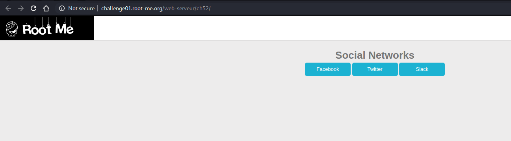

Root-Me WebServer分类 解题思路 （一）
概述
Root Me是一个非常不错的在线网络安全技能专项练习网站。比起其他的一些模拟练习平台，这个网站相对而言更”Noob friendly”…对于渗透测试有兴趣又不知道如何入门的同学，不妨可以从这个网站开始入手。
本文包含WebServer分类中前十六题全部的解题思路。第二部分正在施工中…
目录
HTML - Source code
HTTP - Open redirect
HTTP - User-agent
Weak password
PHP - Command injection
Backup file
HTTP - Directory indexing
HTTP - Headers
HTTP - POST
HTTP - Improper redirect
Install files
CRLF
File upload - Double extensions
File upload - MIME type
HTTP - Cookies
正文
HTML - Source code
送分题。主要目的只是跟新用户打个招呼！
直接查看页面源代码即可。解题密码在HTML的注释中。
虽然这只是一道送分题，但同时，这种题目也给刚接触Web App渗透测试的新手一个非常不错的提示：
千万不要忽视任何你可以获得的信息。对于在页面源码注释中发现造成安全漏洞的关键信息，在现实中其实也很常见。会有开发者将一些测试用帐号密码直接注释，就发布到了网络上。更多的情况下，泄漏的信息不像密码这么直接，但绝对能给有攻击意图的黑客带去极大的帮助/提示。
HTTP - Open redirect

这个页面的功能很简单，页面中间有三个按钮。你点击了某个按钮，页面就会跳转到对应的社交网络应用(Facebook, Twitter, Slack)。
根据描述，我们的目标是让页面跳转到除上述三个网站外的任何一个网页。所以，研究一下这个页面是如何实现跳转功能的：
查看源码，我们可以看到，网页将目标地址作为url参数进行传递，通过服务器端实现重定向的跳转。除了url参数之外，还有一个h参数。参数的值是一个32位的16进制字符串。具体作用还不知道。但是根据参数名字h，以及32位长度的特征，可以大致猜测应该是一个MD5的Hash值。
首先尝试仅修改url=后面的值，观察是否能够完成跳转。完整的url为: http://challenge01.root-me.org/web-serveur/ch52/?url=https://baidu.com&h=a023cfbf5f1c39bdf8407f28b60cd134
看上去，我们没有能够成功进行跳转。错误的信息为:”incorrect hash!”(错误的哈希）。这证实了我之前关于h参数是哈希值的猜测。现在的任务就是找出这个是谁的哈希值。
简单尝试两次：
1 | richard@richard-Kali:~$ echo -n https://facebook.com | md5sum |
Bingo！很轻松就找到了。就是对url参数的值进行了md5哈希。所以我们只需要对我们提供的值计算一次md5即可。
1 | richard@richard-Kali:~$ echo -n https://baidu.com | md5sum |
将得到的结果重新组合构成新的URL请求： http://challenge01.root-me.org/web-serveur/ch52/?url=https://baidu.com&h=bb6e082d5c360ce6a0c64f926feea905
再次尝试，顺利拿到了flag： e6f8a530811d5a479812d7b82fc1a5c5 10分顺利到手～
要点1：
可能有人会产生疑问：跳转到百度又怎么了？这有什么不安全的？
跳转到百度确实没怎么样，但是允许任何人通过修改URL来控制网页的跳转，是会产生极大的安全风险的！！设想以下场景：某个银行的网站存在这么一个参数可以完成任意跳转，那么攻击者可以创建一个 www.fakebank.com 的网页，使其与银行的页面看上去完全一样，然后将以下链接发送给受害者：www.bank.com/?url=www.fakebank.com. 光看链接的开头，受害者很容易就相信这是真实的官方网站。然而，点击这个链接进入的实际却是黑客精心准备的”陷阱“！ 攻击者还会在链接中加入其他无效参数进行混淆，使url参数的值变得极其难以发现，增加攻击的成功率。所以，一定要避免使用这样的方式实现跳转。这确确实实会造成安全风险。
要点2：
这个网页能可考虑到了上述的问题，所以加入了哈系进行校验。但是，显而易见，这样的校验完全没有起到作用。这说明了，永远不要依赖用户可以修改的值作为数据校验。这只是掩耳盗铃罢了…
HTTP - User-agent
点开这个挑战的页面，提示其实很明确：“Wrong user-agent: you are not the “admin” browser!” （错误的user-agent:你没有使用”admin”浏览器）
这个挑战是关于修改HTTP请求头中User-Agent的值。这里就不多对HTTP请求头及User-Agent属性做过多的介绍了。随手搜一下就能找到非常多的详细讲解。简而言之，User-Agent是HTTP请求头中记录用户浏览器信息的属性。
为了修改HTTP请求头中的属性，用到的思路是在本地设置代理，截取浏览器发出的HTTP请求。在代理中对请求进行篡改后，再将请求发送到目标服务器上。具体的实现方法有很多：通过代理工具（Burp），浏览器插件或者是Python脚本来实现。这里我使用Burp来完成。
在浏览器中将代理设置为127.0.0.1:8080 (Burp的默认端口，可以根据情况自行配置）。设置完成后，重新发送请求。可以看到Burp成功截取了这个HTTP请求。
将User-Agent的值修改为要求的admin。并点击Forward将请求转发到目标服务器。
Bingo! 成功获取了Flag～

解题密码： rr$Li9%L34qd1AAe27
要点：
HTTP请求头中的数据也属于“用户输入”数据。不要轻易信赖HTTP请求头中的数据,
Weak Password
点开页面，首先弹出的是一个身份验证的对话框。

结合挑战的主题，首先尝试一下最常见的几组弱密码：user/user; admin/admin; user/password;…
结果admin/admin的用户名密码对就直接成功登录了！

喂喂喂！这也太简单了吧…完全没想到居然这么容易就通过了。。。这题居然只有34%的通过率我也是没有料到。
要点：
在安全运营的过程中，要设计合理完善的密码策略，避免弱密码，尤其是默认密码的出现。因为弱密码而产生的安全事件连起来已经可以绕地球好几圈了，一次又一次地因为这种相当容易避免的问题而造成非常大的损失是一件很让人沮丧的事情。
PHP - Command Injection
题目很明确的说明了，这是一道命令注入的挑战题。进入页面尝试一下，发现这个页面实现的是ping用户提供的IP地址的功能。
可以大概思考一下实现的方式：PHP接受用户的输入，然后将其与”ping”进行拼接，然后发送给系统进行执行。所以注入的方式也很明显，就是在IP地址之后加入分割符，然后再加上自己想要执行的命令。所以尝试一下127.0.0.1; ls看看这个页面有没有输入校验。
啊哈！果然是一道比较初级的题目，ls命令被成功执行了。我们看到多了一行index.php的输出。根据提示，在index.php文件中，有我们想要找到的解题密码。所以调整输入：
127.0.0.1; cat index.php
结果，只是在末尾多了一个输入框。看起来，应该是输出的php脚本被页面同时做了解析。看看页面源码确认一下吧？
哈哈，有意外发现。flag被加在了php的注释区域内。ok，这道题就完成了！
Flag为S3rv1ceP1n9Sup3rS3cure
要点：
这道题再次反应了用户输入校验的重要性。在应用开发的过程中，务必要确保对接受到的用户输入进行校验，确保用户的输入与设计的功能是相匹配的，否则的话，狡猾的用户们一定会制造出你意想不到的效果。
Backup File
打开页面，看到的是如下的登录界面。简单尝试了几个简单用户名密码，发现并不能成功登录。
先快速查看一下页面源码，可惜没有发现任何线索。根据题目的名字 backup file , 尝试在URL后面添加backup等路径名，尝试是否存在跨目录攻击。但也没有任何发现。
Emmmm…第一次陷入僵局！好的呗，偷偷瞄一眼论坛讨论。有一条回复给出了这个链接https://en.wikipedia.org/wiki/List_of_filename_extensions 作为提示。
原来是跟备份文件的文件后缀有关。常见的备份文件后缀名有：
- ??$
1- ~??
现在的问题就是我们需要在哪个文件后面加上后缀呢？最原始的页面路径为http://challenge01.root-me.org/web-serveur/ch11/,没有包含任何文件名称。所以，我们需要猜测一下默认的文件名称。对于PHP比较熟悉的童鞋肯定会知道PHP的默认主页文件是index.php. 那就尝试一下呗！访问http://challenge01.root-me.org/web-serveur/ch11/index.php,嘿嘿！果然，我们看到了完全相同的页面。好叻，既然已经知道了文件名，那么下一步只需要添加上文件后缀，再逐个尝试就可以了。
当访问http://challenge01.root-me.org/web-serveur/ch11/index.php~??时，页面自动下载了一个名为index.php_的文件。
1 |
|
用得到的帐号密码登录，即可！
根据提示，原来用密码直接验证就可以。15分到手！
Flag为OCCY9AcNm1tj。
要点：
在实际生产环境中，类似的问题其实也经常会发生。我们需要额外注意系统产生的备份文件与临时文件（比如vim编辑时也会在相同路径下生成临时文件）。这类文件如果被外部访问，就会直接产生源代码泄漏的事件。虽然在实际情况下，源码不会包含网页的登录信息，但是在很多时候的的确确会有数据库连接的登录信息。 一旦发生源代码泄露，同时数据库的access control又存在缺陷的话，那就直接是一起非常严重的数据库泄漏事件了。[坏笑]
HTTP - Directory Indexing
点进页面一片空白，那就查看一下源码呗。然后源码里有一段注释：<!-- include("admin/pass.html") --> 啊…就这？就这？
访问一下这个页面看看呗…？？？？被骗了？

大致意思就是“被骗了吧！你肯定不是最后一个被骗的！好好再找找去吧！”。Hmmm…法式幽默！行吧，那就再找找咯！
仔细再看看这题的名字： Directory Indexing。既然已经提到了是目录索引，应该是跟访问目录的访问控制问题有关。那哪个路径可能存在类似的问题呢？你们肯定也都想到了吧：admin。
尝试访问一下admin路径：http://challenge01.root-me.org/web-serveur/ch4/admin/ 果然！我们直接看到了admin路径下的索引列表：

接下去的步骤不难猜测，顺着目录一步步找下去，在backup/下有一个名为admin.txt的文件。
直接找到Flag: Linux。这15分应该还算是比较简单的。
要点：
这属于错误安全配置所造成的一个常见的结果。可以参考OWASP Security Misconfiguration中的Scenario #2. 攻击者可以随意浏览服务器上，与网页相关的文件。通过这种方式，攻击者可以获得到源代码，配置信息，身份认证信息等等关键文件。可能产生的影响不言而喻。
HTTP - Headers
先看题目与提示：HTTP Header, HTTP response give informations (HTTP响应会提供信息)
OK，这个提示算是相当明显了。我们需要查看页面返回的HTTP头中的内容。
我们看到了一项名为Header-RootMe-Admin: none的Header参数值。那我们在发出的请求中加入这个HTTP头部字段，并修改他的值，看看会产生什么样的结果。
哦霍！直接成功。一下子就获取到了Flag: HeadersMayBeUseful
要点：
就像原题中提示的那样，HTTP响应的信息并不仅仅包含你所看到的页面的内容。HTTP的头部字段里也会有很多重要的信息。而且，这部分信息是用户可控的！！如果要使用HTTP头部字段的值，那就千万要记得把这个数据作为用户输入数据来对待，进行输入校验后再拿来使用。
HTTP - POST
这道题目的说明是: Find a way to beat the top score! (想个办法来击败最高分)
挑战页面如下：
点击”Give a try!”按钮，页面会随机生成一个数字。当然，结果永远是一样的，都比不过999999。咋办？只能开挂了！！既然标题是POST，那么就使用Burp拦截一下看看，POST有什么内容。
这就简单了。分数原来是在客户端生成，并通过POST中的一个参数进行传递的。那我们只需要对POST中的数字进行篡改，就可以了。就像这样：
发送！顺利得到flag: H7tp_h4s_N0_s3Cr37S_F0r_y0U
要点：
这道题的主要目的就是了解HTTP协议中，通过POST来传递数据的方法。虽然我们通过浏览器没法直接修改POST中的数据，但这并不意味着POST传递的数据就可以保证数据是可靠的。修改POST的数据同样也是非常容易办到的。
HTTP - Improper redirect
同样的，还是先看一眼描述与提示：Don’t trust your browser(不要相信你的浏览器); Get access to index (想办法进入index)。ok，先看看页面具体是怎么样的。
有一个用户登录界面，看描述应该是需要通过php重定向的方法来绕过验证，进入到index页面。在浏览器中直接访问index.php，我们会被重定向到login.php进行身份验证。看似好像没有什么毛病。但是，如果我们尝试用Burp来仔细观察一下重定向的过程，问题就显现出来了。
虽然状态码是302重定向，但是我们可以惊讶地发现，index.php页面源码居然也完完整整地显示了出来。。。通过这种方式，我们就相当于绕开了用户认证，就访问到了受限制的页面。我们可以轻易地看到Flag: ExecutionAfterRedirectIsBad
这个问题产生的原因是这样的：在PHP编写的时候，判断用户未授权的条件下，直接使用了header('Location:xxx/login.php')。脚本执行的时候，确实会返回302的HTTP响应，但除此之外，PHP在添加了重定向路径后，并没有停止执行，而是继续将页面的内容输出到了HTTP响应的body中。虽然在浏览器上，用户并不会直接看到未授权的页面，但是实际上，这个页面的内容已经完完整整地发送到了用户手里。
要点：
就跟描述里说的那样，你通过浏览器所看到的内容并不一定就是实际从服务器返回的全部内容。这点在安全测试的过程中尤为重要。
HTTP - Verb tampering
动词篡改？看到这个挑战的标题，我第一反映是有点懵… 但是后来仔细思考了一下，这里的verb应该指的是HTTP请求的方法。
众所周知（应该是吧），HTTP请求的方法有 GET, POST (最常用), HEAD, PUT, DELETE, TRACE, OPTIONS, CONNECT 这八种。这里面HEAD和OPTIONS也不是动词呀…? Anyway,先看一下挑战页面呗。

好的呗，这个页面被保护了，需要用户身份验证才能访问。所以，我们要做的就是尝试修改HTTP请求的方法，看看是不是有机会绕过身份验证。默认的HTTP请求方法是GET。我们使用Burp将请求的方法改成上述列出的其他方法逐个尝试一下：
使用DELETE方法发送请求，服务器直接给我们返回了解题的flag: a23e$dme96d3saez$$prap
要点：
这个挑战说明的是通过篡改HTTP请求方法来绕过Web授权和认证的例子。这种情况大多数是在配置的时候产生的。由于GET/POST请求相对而言更加常用，所有很多开发者/运维人员会只考虑到对这两种HTTP请求方法进行配置，而忽视了剩余的HTTP请求方法。因此，在进行配置时，一定要确保安全约束策略覆盖到所有的HTTP请求方法。
Install files
这道题打开页面一片空白。我一开始还以为网络连接有问题，后来发现并不是。那就先观察一下页面的源码。果然，在注释中发现了这么一行：
根据这个提示再点开http://challenge01.root-me.org/web-serveur/ch6/phpbb。点开以后我们发现！！除了Root-me的header之外，依旧是一片空白。。。- -
好吧，结合这题的提示”You know phpBB ?”，先去往上查一下PHPBB的相关信息：PHPBB是一个使用PHP开发的开源网络论坛系统。再简单搜索一下PHPBB与文件安装相关的漏洞，我们发现，phpBB的安装路径为install目录。我们访问该路径就可以看到目录下的文件列表，我们可以看到有install.php这么一个文件。访问这个文件，我们直接可以获取到解题flag:karambar
要点：
其实这道题的总结，在install.php里面已经全部写出来了。只不过是法语的，我们需要翻译一下：
这个缺陷实际上是对网站站长的监督，这些文件应该在使用后都被正确地删除，包含 phpbb 论坛的安装页。
虽然此类漏洞已经越来越少地发生，因为开发人员使用了验证系统。
然而，我们需要了解的是，我们还是可以发现许多篡改 URL的方法…
通过这些方法，攻击者可以重置论坛，并更改所有管理员密码，初始化论坛。
CRLF
同样的，登录到挑战页面，可以看到一个用户登录界面。随便尝试登录会发现，每次登录尝试都会在日志中生成一条记录。
我第一个想到的是这可能是一道XSS的题目，所以尝试用户名test<script>。啊偶，看上去<script>被正确地打印了出来，不太对。
这个时候才想起来返回重新看一下题目的说明，原来是需要在日志里面注入内容。结合挑战的名称，那应该就是利用换行符进行分割，注入一行成功登录的信息。在日志中我们可以看到有admin用户成功登录的记录。所以就使用同样的内容进行注入：
1 | GET /web-serveur/ch14/?username=admin authenticated.%0d%0atest123&password= HTTP/1.1 |
顺利获得flag: rFSP&G0p&5uAg1%
File upload - Double extensions
题目就非常明显了，通过双后缀来绕过服务器端的文件上传类型检查。登录页面，找到上传功能。然后在本地编辑一段读取/etc/passwd的PHP代码：
1 |
|
并命名为test.php.jpg保存到本地。再将其上传。果然！！失败了…
但好消息是，我们的脚本顺利地绕过了文件上传的类型检测，并被服务器解析了。但是，php代码本身存在一些问题，所以没有顺利读取到/etc/passwd的内容。所以，我们需要对我们的php代码进行一下微调。
既然无法直接用PHP函数读取文件的内容，我们就尝试通过调用系统命令执行函数来完成。
1 |
|
OK!这下我们可以成功看到/etc/passwd的内容了！
但是flag呢？flag在哪里呀…找了一圈没找到…然后再仔细看了一遍题目才发现！!Retrieve the validation password in the file .passwd at the root of the application.:原来要读取的文件是应用根目录下的.passwd 文件! 晕！！！
唯一的问题就是不知道应用的根目录在哪一层，需要向上返回几次。这个情况下，我们就需要使用到————枚举法！！几次尝试后，最终上传的PHP脚本内容为：
1 |
|
这样我们就可以成功获得到Flag: Gg9LRz-hWSxqqUKd77-_q-6G8
File upload - MIME type
这道题跟前面的题非常类似，需要达到的目的是完全一样的。所以脚本的内容应该可以不用修改。不同的应该是绕过的方式，这次需要使用到的方法不再是通过给PHP文件添加合法的后缀名。
尝试上传PHP脚本，使用Burp截取发送的请求，可以看到Content-Type的值为application/x-php。这个值也可以体现出上传的文件的类型。
直接发送到服务器，毫无意外，被服务器拒绝了！
这里我们需要做的是，让服务器端认为我们上传的文件是个人畜无害的图片文件。所以，我们需要把这个Content-Type的值修改为image/jpeg。再上传试试～
Bingo～成功获取到了flag:a7n4nizpgQgnPERy89uanf6T4.
要点：
这紧接着的两道题都是文件上传漏洞相关的题目。文件上传漏洞是一个经常被利用到的漏洞。通过这种方法，黑客可以上传一段小脚本到服务器上，一旦有办法执行这段脚本，那攻击者就可以进一步来实现对服务器的完全控制。OWASP Unrestricted File Upload 有完整的对于这一个漏洞的介绍。并且说明了应该如何有效地防止此类漏洞的产生。
HTTP -Cookies
题目的描述是Bob created a PHP script to gather user emails。看上去，这是一道利用脚本获取用户Cookie的题目。
先点击进入页面了解一下这个页面的功能。用户可以输入Email地址，提交后会进行保存。页面下方还有一个Saved email addresses的链接，点击后会显示需要是admin才能查看。

那么，显而易见。我们需要做的是利用网页的漏洞，让自己变成admin身份。
在之前尝试的过程中，我发现在点击Saved email adresses链接后，url多了一个参数c=visiteur。所以首先对参数的值进行修改，尝试访问http://challenge01.root-me.org/web-serveur/ch7/?c=visiteur。
可以看到网页报出了一个新的错误提示：Problem with cookie。所以我们需要看一下该页面使用的cookie都有些什么值。查看cookie可以在浏览器中安装插件，Firefox和chrome的应用商店中都很容易找到cookie编辑的插件。查看cookie我们可以发现页面cookie中有一个名为ch7的参数。
OK！尝试把这个值从 visiteur 修改为 admin，并保存后重新点击链接。我们就轻易地获得到了通关密码：ml-SYMPA。
要点：这个其实与HTTP头的概念类似，Cookie中的值其实也属于用户输入数据的一部分。这一点经常会被忽视。服务器要使用Cookie中的参数时，必须先要考虑到这一点，先进行输入校验再使用。将Cookie用于维持登录身份时，也要充分考虑cookie的参数可能被篡改的问题。